Computer Network - Principles of Reliable Data Transfer
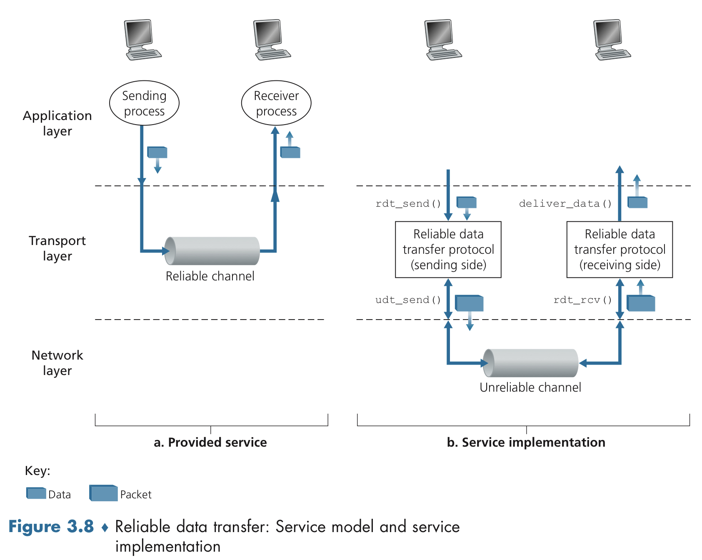
- Reliable data transfer protocol: Difficult since the layer below the reliable data transfer protocol may be
unreliable.
- E.g. TCP is a reliable data transfer protocol that is implemented on top of an unreliable (IP) end-to-end network layer.
- Unidirectional data transfer: Data transfer from sending to the receiving side.
- Bidirectional data transfer: Reliable full-duplex transfer.
1️⃣ Building a Reliable Data Transfer Protocol
Reliable Data Transfer over a Perfectly Reliable Channel: rdt1.0
- finite-state machine (FSM): The operation of the rdt1.0 sender and receiver.
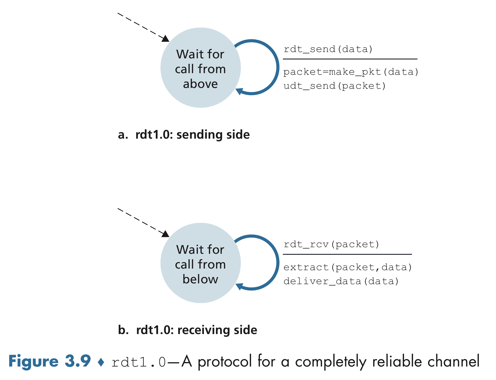
The sending side of rdt
- Accepts data from the upper layer via the
rdt_send(data)event. - Creates a packet containing the data (via the action
make_pkt(data)) and send the packet into the channel.
In practice, the rdt_send(data) event would result from a procedure call (for example, to rdt_send()) by the
upper-layer application.
The receiving side of rdt
- Receives a packet from the underlying channel via the
rdt_rcv(packet)event. - Removes the data from the packet (via the action
extract(pakcet, data)). - Passes the data up to the upper layer (via the action
deliver_data(data))
In practice the rdt_rcv(packet) event would result from a procedure call (for example, to rdt_rcv()) from the lower-
layer protocol.
Reliable Data Transfer over a Channel with Bit Errors: rdt2.0
- Positive acknowledgements and negative acknowledgements: The message-dictation protocol that allow the receiver to let the sender know what has been received correctly and what has been received in error and tus requires repeating.
- ARQ (Automatic Repeat reQuest) protocols: Reliable data transfer protocols based on such retransmission.
Three additional protocol capabilities required in ARQ protocols to handle the presence of bit errors:
- Error detection. First, a mechanism is needed to allow the receiver to detect when bit error has occurred.
- Receiver feedback. Since the sender and receiver are typically executing on different end systems, possibly separated by thousands of miles, the only way for the sender to learn of the receiver’s view of the world is for the receiver to provide explicit feedback to the sender.The positive (ACK) and negative (NAK) acknowledgement replies in the message-dictation scenario are examples of such feedback.
- Retransmission. A packet that is received in error at the receiver will be retransmitted by the sender.
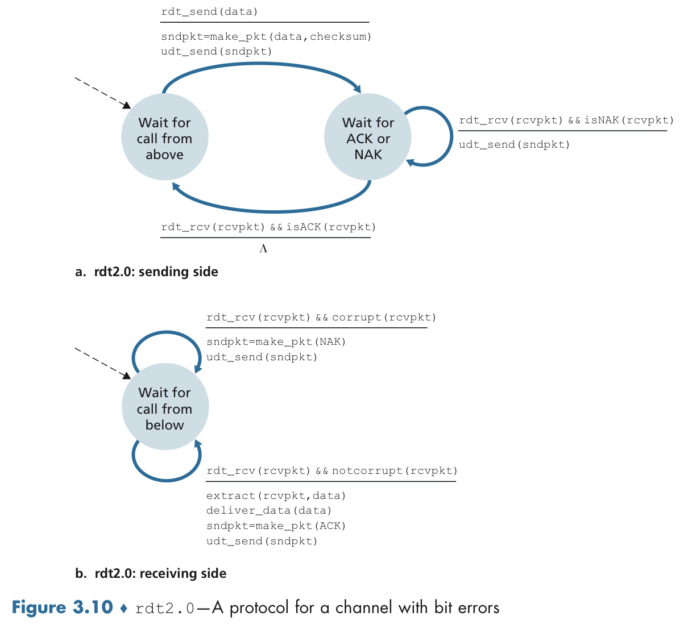
- stop-and-wait protocols: The sender will not send a new piece of data until it is sure that the receiver has correctly received the current packet.
Three possibilities for handling corrupted ACKs or NAKs:
- Consider what a human might do in the message-dictation scenario. If the speaker didn’t understand the “OK” or “Please repeat that” reply from the receiver, the speaker would probably ask, “What did you say?” The receiver would then repeat the reply. But what if the speaker’s “What did you say?” is corrupted? The receiver, having no idea whether the garbled sentence was part of the dictation or a request to repeat the last reply, would probably then respond with “What did you say?” And the, of course, that response might be garbled. Clearly, we’re heading down a difficult path.
- A second alternative is to add enough checksum bits to allow the sender not only to detect, but also to recover from, bit errors. This solves the immediate problem for a channel that can corrupt packets but not lose them.
- A third approach is for the sender simply to resend the current data packet when it receives a garbled ACK or NAK packet. This approach, however, introduces duplicate packets into the sender-to-receiver channel. The fundamental difficulty with duplicate packets is that the receiver doesn’t know whether the ACK or NAK it last send was received correctly at the sender. Thus, it cannot know a priori whether an arriving packet contains new data or is a retransmission.
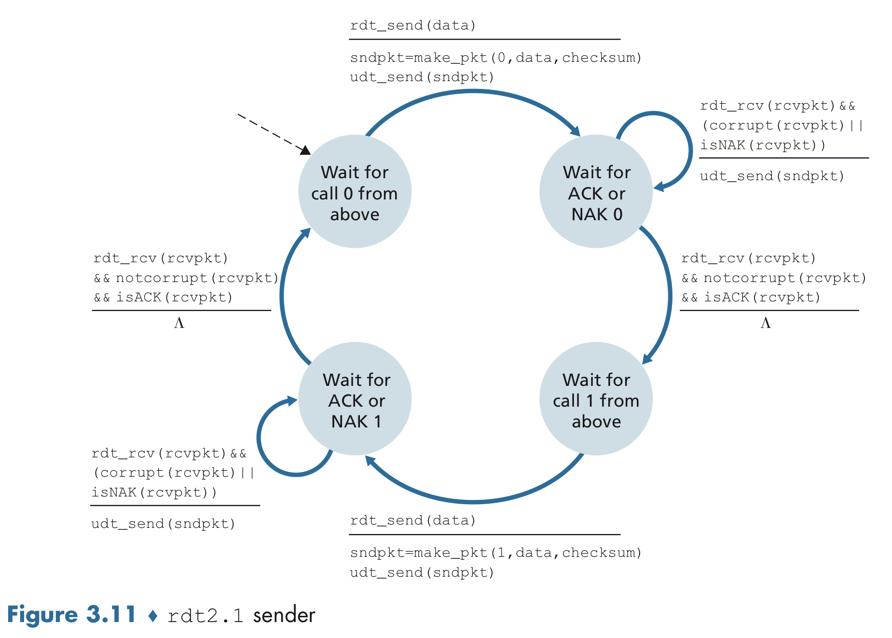
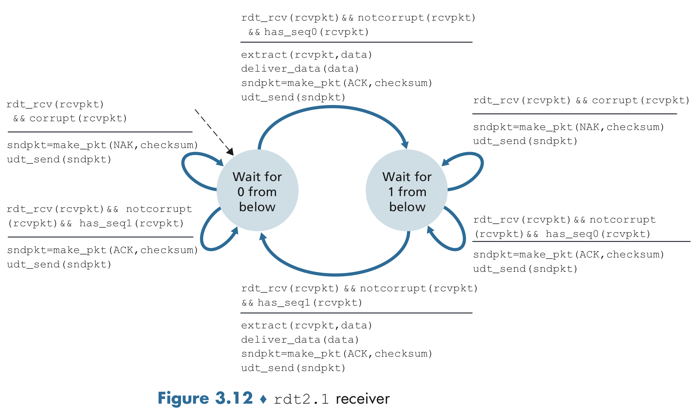
- Duplicate ACKs: The receiver did not correctly receive the packet following the packet that is being ACKed twice.
Reliable Data Transfer over a Lossy Channel with Bit Errors: rdt3.0
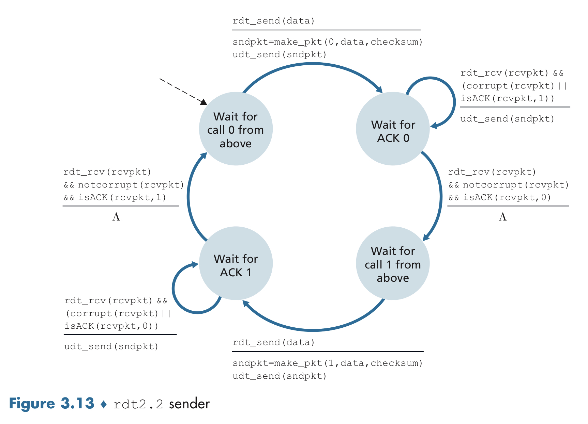
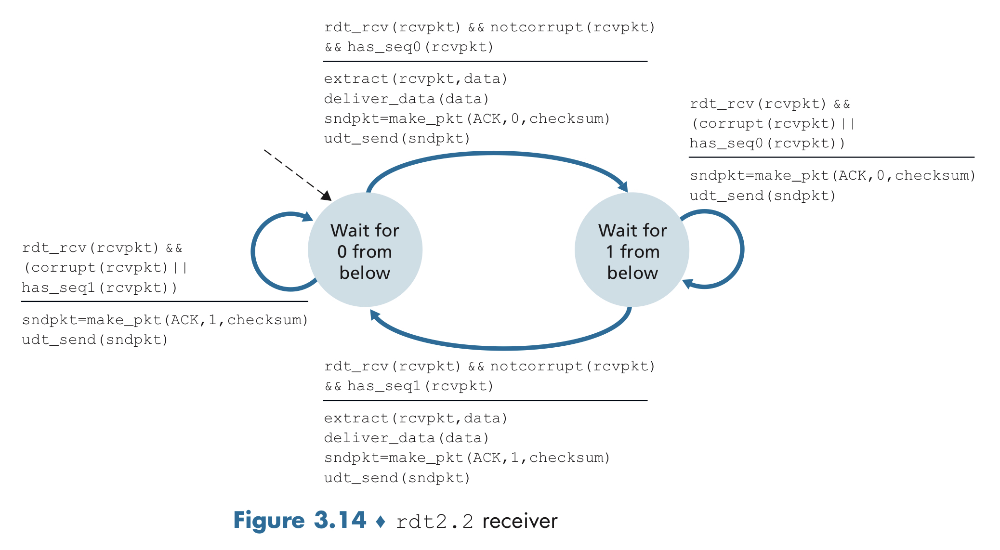
- Duplicate data packets: If a packet experiences a particularly large delay, the sender may retransmit the packet even though neither the data packet nor its ACK have been lost.
- Countdown timer: A time-based retransmission mechanism that can interrupt the sender after a given amount of time
has expired.
- Start the timer each time a packet is sent.
- Respond to a timer interrupt.
- Stop the timer.
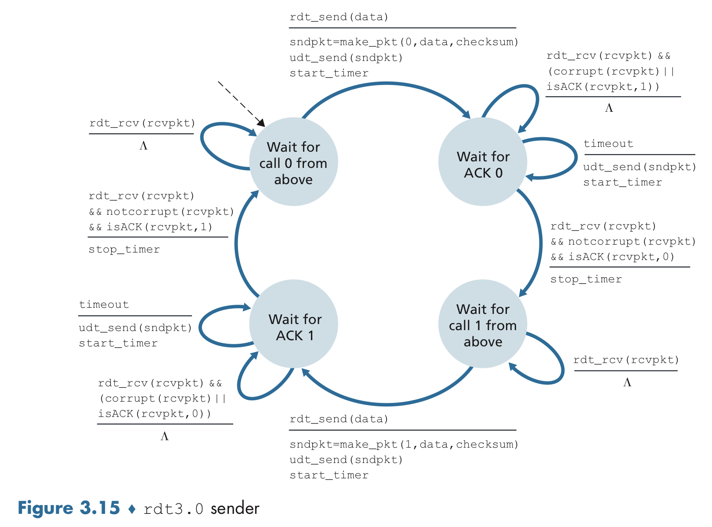
- Alternating-bit protocol: Packet sequence numbers alternate between 0 and 1.
2️⃣ Pipelined Reliable Data Transfer Protocols
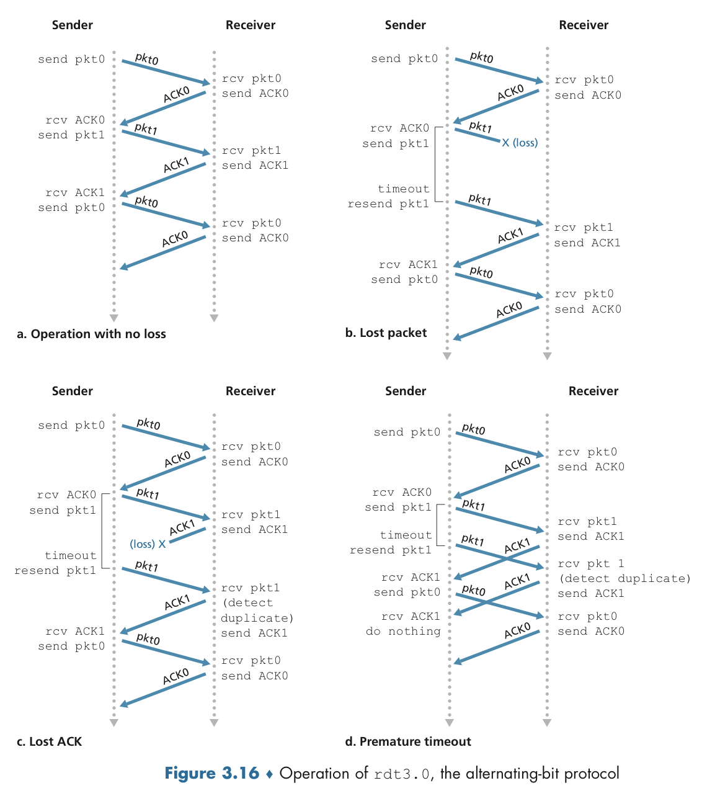
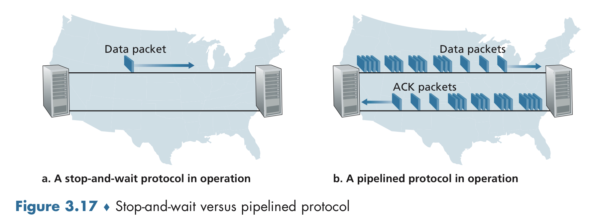
Transmit the packet into the 1 Gbps link
Stop-and-wait protocol has a rather dismal sender utilization Usender
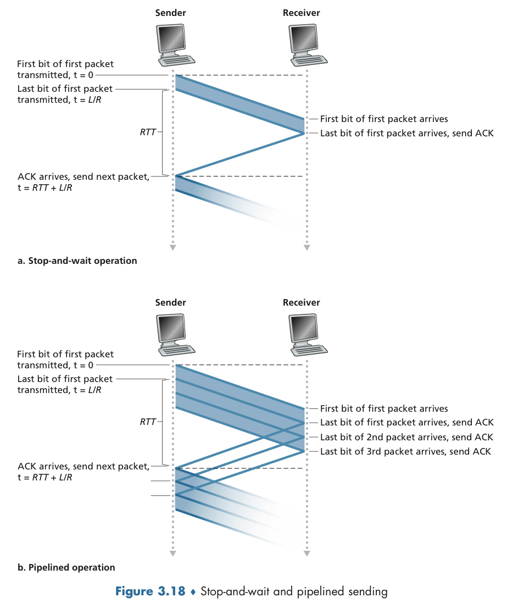
- Pipelining: The many in-transit sender-to-receiver packets can be visualized as filling a pipeline
The consequences for reliable data transfer protocols:
- The range of sequence numbers must be increased, since each in-transit packet must have a unique sequence number and there may be multiple, in-transmit, unacknowledged packets.
- The sender and receiver sides of the protocols may have to buffer more than one packet. Minimally, the sender will have to buffer packets that have been transmitted but not yet acknowledged. Buffering of correctly received packets may also be needed at the receiver, as discussed below.
- The range of sequence numbers needed and the buffering requirements will depend on the manner in which a data transfer protocol responds to lost, corrupted, and overly delayed packets. Two basic approaches toward pipelined error recovery can be identified: Go-Back-N and selective repeat.
3️⃣ Go-Back-N (GBN)
- Go-Back-N (GBN) protocol: The sender is allowed to transmit multiple packets without waiting for an acknowledgement, but is constrained t have no more than some maximum allowable number, N, of unacknowledged packets in the pipeline.
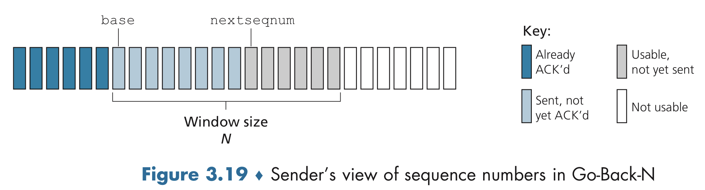
0 ~ base-1: Packets that have already been transmitted and acknowledged.
base ~ nextseqnum-1: Packets that have been sent but not yet acknowledged.
nextseqnum ~ base+N-1: Packets that can be sent immediately, should data arrive from the upper layer.
- Window size: The range of permissible sequence numbers for transmitted but not yet acknowledged packets.
- Sliding-window protocol: GBN (Go-Back-N) protocol.
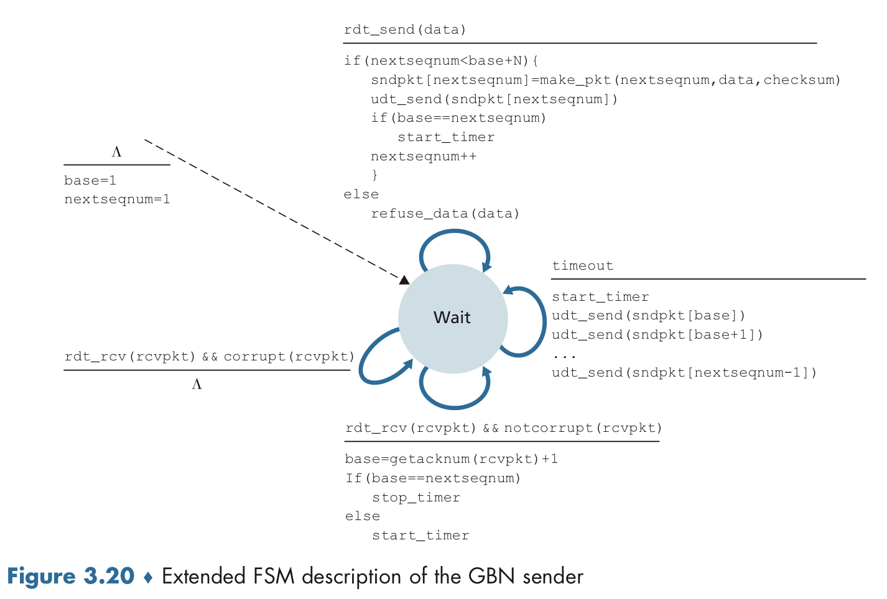
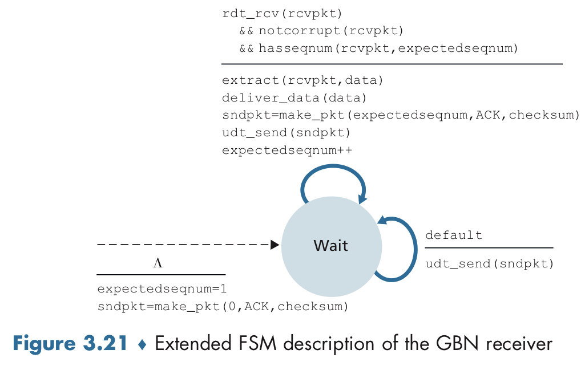
The GBN sender must respond to three types of events:
- Invocation from above. When rdt_send() is called from above, the sender first checks to see if the window is full, that is, whether there are N outstanding, unacknowledged packets. If the window is not full, a packet is created and sent, and variables are appropriately updated. If the window is full, the sender simply returns the data back to the upper layer, an implicit indication that the window is full. The upper layer would presumably then have to try again later. In a real implementation, the sender would more likely have either buffered this data, or would have a synchronization mechanism that would allow the upper layer to call rdt_send() only when the window is not full.
- Receipt of an ACK. In our GBN protocol, an acknowledgement for a packet with sequence number n will be taken to be a cumulative acknowledgement, indicating that all packets with a sequence number up to and including n have been correctly received at the receiver.
- A timeout event. The protocol’s name, “Go-Back-N”, is derived from the sender’s behavior in the presence of lost or overly delayed packets. As in the stop-and-wait protocol, a timer will again be used to recover from lost data or acknowledgement packets. If a timeout occurs, the sender resends all packets that have been previously sent but have not yet been acknowledged. If an ACK is received but there are still additional transmitted but not yet acknowledged packet. If an ACK is received but there are still additional transmitted but not yet acknowledged packets, the timer is restarted. If there are no outstanding, unacknowledged packets, the timer is stopped.
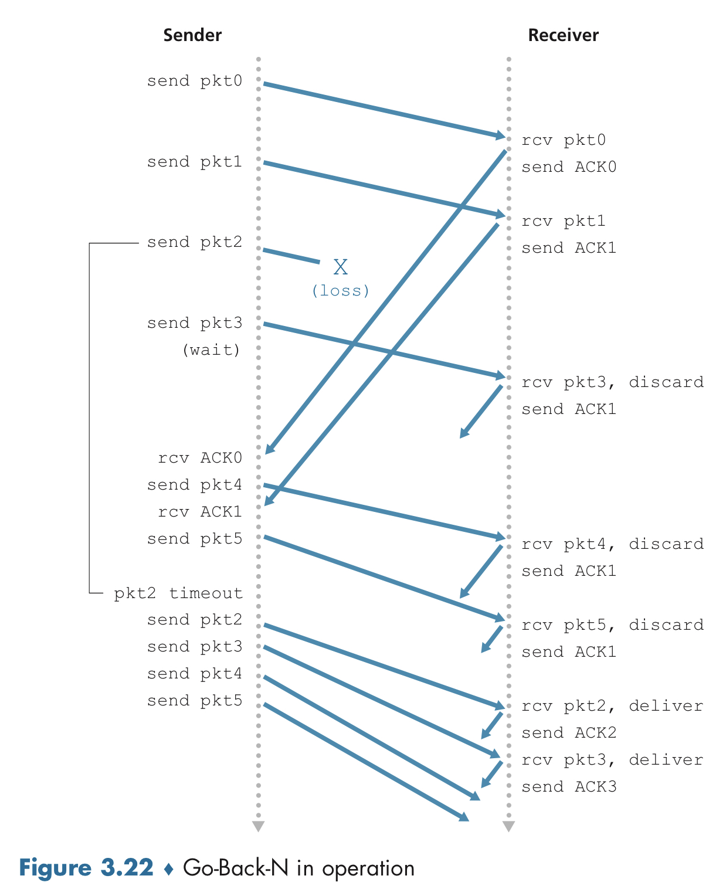
4️⃣ Selective Repeat (SR)
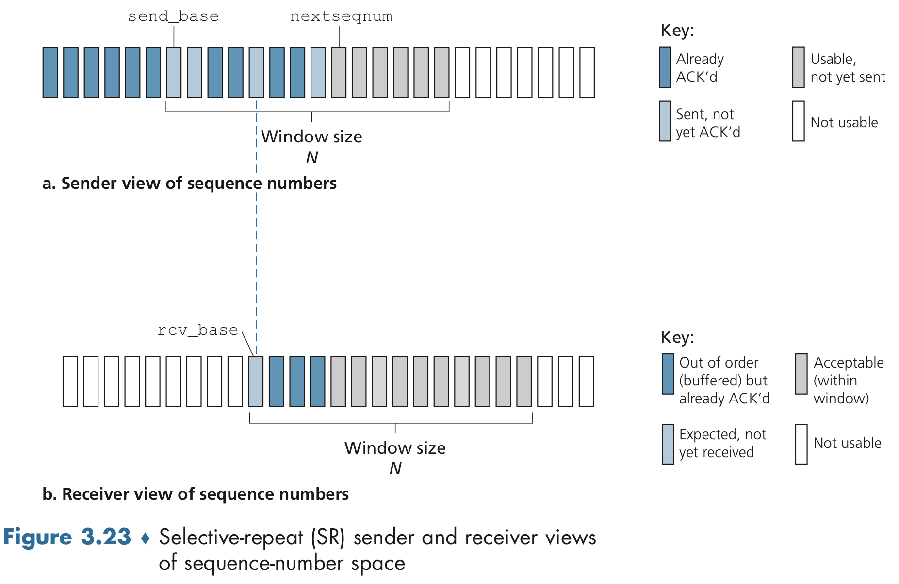
SR sender events and actions
- Data received from above. When data is received from above, the SR sender checks the next available sequence number for the packet. If the sequence number is within the sender’s window, the data is packetized and sent; otherwise it is either buffered or returned to the upper layer for later transmission, as in GBN.
- Timeout. Timers are again used to protect against lost packets. However, each packet must now have its own logical timer, since only a single packet will be transmitted on timeout. A single hardware timer can be used to mimic the operation of multiple logical timers.
- ACK received. If an ACK is received, the SR sender marks that packet as having been received, provided it is in the window. If the packet’s sequence number is equal to *send_Base, the window base is moved forward to the unacknowledged packet with the smallest sequence number. If the window moves and there are untransmitted packets with sequence numbers that now fall within the window, these packets are transmitted.
SR receiver events and actions
- Packet with sequence number in (rcv_base, rcv_base+N-1) is correctly received. In this case, the received packet falls within the receiver’s window and a selective ACK packet is returned to the sender. if the packet was not previously received, it is buffered. If this packet has a sequence number equal to the base of the received window, then this packet, and any previously buffered and consecutively numbered (beginning with rcv_base) packets are delivered to the upper layer. The receive window is then moved forward by the number of packets delivered to the upper layer. When a packet with a sequence number of rcv_base=2 is received, it and packets 3, 4, and 5 can be delivered to the upper layer.
- Packet with sequence number in (rcv_base-N, rcv_base-1) is correctly received. In this case, an ACK must be generated, even though this is a packet that the receiver has previously acknowledged.
- Otherwise. Ignore the packet.
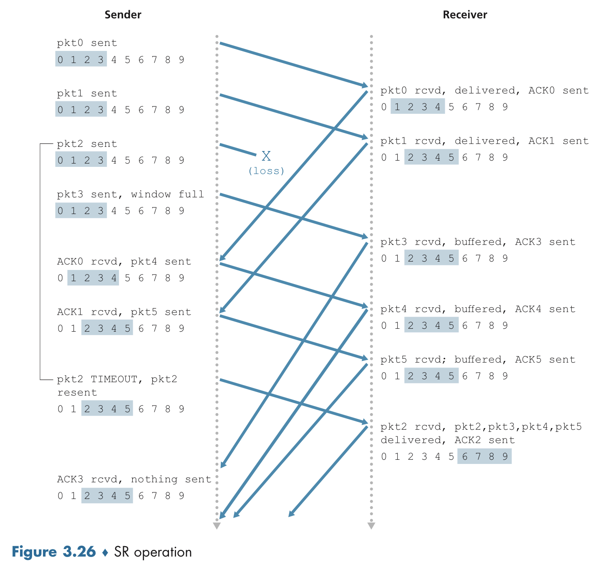
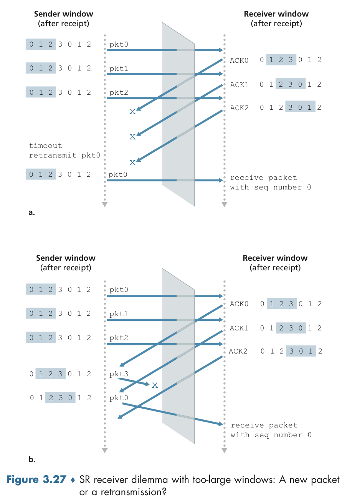
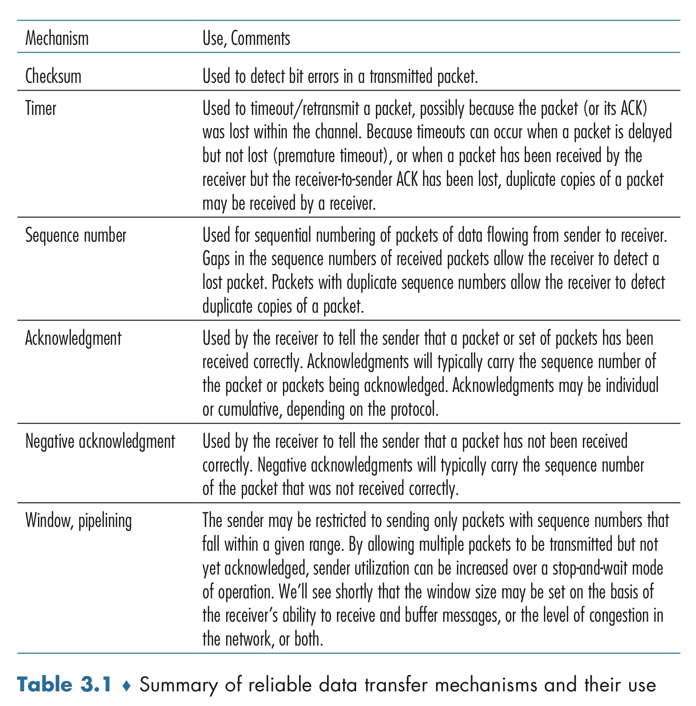
Reference
- Computer Networking 8th: A Top-Down Approach by James Kurose and Keith Ross
- Computer Network Lecture by Seungsik Choi in Incheon National University